QuickFolders.org
| QuickFolders Home Menu On Top Support MenuOnTop! MenuOnTop Change Log |
Menu On Top: History
Have a look at the quick tutorial here: How to install Menu On Top
Menu On Top is a small extension which makes it possible to style Thunderbird and Firefox main menu. Detail on how to use it and screenshots are here.
Version Details
Here is a history of changes - as always note the dates are in UK format DD/MM/YYYY...
-
1.5 - Released shortly
 Important news: This addon will not work from Firefox version 57 as XUL / XPCOM based addons are officially not supported anymore. If you want to keep using this addon in browsers, you can use SeaMonkey or the older Firefox fork Pale Moon
Important news: This addon will not work from Firefox version 57 as XUL / XPCOM based addons are officially not supported anymore. If you want to keep using this addon in browsers, you can use SeaMonkey or the older Firefox fork Pale Moon- Added Italian Locale - (thanks to Leopoldo Saggin at Babelzilla)
- Added Chinese Locale (thanks to YFdyh000 at Babelzilla)
- Added Swedish Locale (thanks to A. Regnander at Babelzilla)
- Added option for font shadows
- Firefox Pale Moon: fix tab opener for bookmarks
- In Firefox: If a tab is already open in the current window, set focus to it instead of opening a duplicate.
- Made sure the new tabbar top-spacing setting from version 1.4 works in Firefox too.
-
1.4 - 09/03/2017
- Added setting for spacing to tabbar when not in maximized mode "Tab bar top margin"
before after 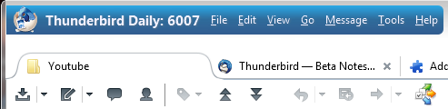 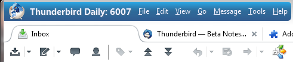 - Added Pale Moon support
- Added spacing to caption bar when in maximized mode
- Added localisation and German locale - please contact me below if you want to add your own language
- Make sure that icon height overrides max menu height. When selecting a new flavor (which has a specific maximum menu height), and an Icon is active, then the maximum height of the men will not fall below the size value given on the advanced settings page.
- Moved support pages to quickfolders.org
- Added two Pepe Icons
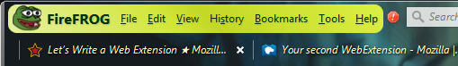
- Added setting for spacing to tabbar when not in maximized mode "Tab bar top margin"
-
1.3 - 10/05/2016
- Removed caption buttons space (right of calendar buttons) in Thunderbird under Windows
Before After 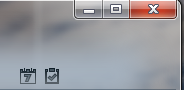 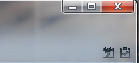 - Added remote port label option for developers
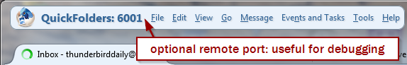 - Tb 48.0 Support for adding the new Thunderbird preferences tab to bookmark menu.
You can also add it manually in older versions
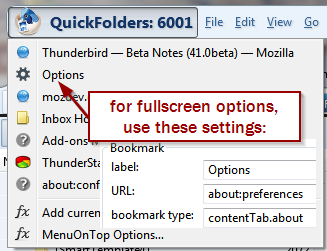 - Fixed "about" tabs to open in content tabs from Firefox 43.0
- Known issue: avatar icon not working if profile name contains special characters (space?)
- Removed caption buttons space (right of calendar buttons) in Thunderbird under Windows
-
1.2 - 11/01/2016
- Fixed global let which broke MenuOnTop in Firefox 44 beta
- Bumped up compatibility to 44.*
- Have a happy new Year 2016!
-
1.1 - 17/10/2015
- Added Firefox and Thunderbird icons and also Halloween ones. Of course you can still use the League of Legends avatars which were
distributed with the previous version.
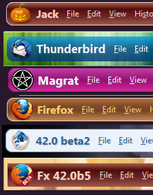 - Font size and bold attribute for custom menuitem.
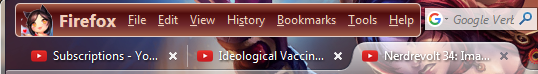 - Improved instant loading of settings on update.
- Enabling Custom Menu will show avatar icon instantly
- Added Firefox and Thunderbird icons and also Halloween ones. Of course you can still use the League of Legends avatars which were
distributed with the previous version.
-
1.0 - 11/Oct/2015
- Especially for Thunderbird, you can now specify a space for dragging the window if you are using the option "show menu in titlebar":
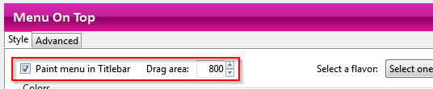 - Added lop-left bookmark feature, use it to store your most important web pages, single
messages (Tb) and mail folders (Tb). This is a handy and quick way of keeping only the
most important bookmarks within easy reach without wasting screen space.

Just activate the option in advanced, and enter a label of your choice. The new menu will show up beside the "File" menu. Navigate to any web-page or open an email, open a single message tab or click on a Folder, and then choose "Add current Item" (Thunderbird) or "Add current Webpage" (Firefox).
This is a space-saver for when you do not want to permanently show your Personal Bookmark Toolbar. So ultimately this will unclutter your Mozilla experience! - Added Avatar Icon - choose an image to represent your profile. I have added some icons of League of Legends and Borderlands
characters, created from images I found -these are under fair use and I have added license information and links in the "avatars" subfolders
where they are stored.
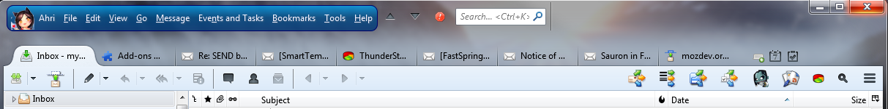 - Added separate color choices for hover / active menu items
- New theme "Australis Redesigned"
- Improved layout of settings dialog
- Especially for Thunderbird, you can now specify a space for dragging the window if you are using the option "show menu in titlebar":
-
0.9.8 - 04/11/2014
- Added Firefox Support
- Added setting for left margin
-
0.9.6 - 10/08/2014
- Added a "force small icons" option to make sure buttons in menu toolbar stay small in the latest Thunderbird versions
-
0.9.5 - 24/05/2014
- Preferences dialog stays on top of Thunderbird now
- Added new "Tangerine" flavor.
- Border color and width.
- Better handling of defaults.
- Increases search box height when displaying in menu by cutting down margin: .chromeclass-menubar .remote-gloda-search{margin:1px 2px; }
-
0.9.4 - 02/09/2013
- Choices for corner radius rules (left, right)
- removed ROTT specific code to eliminate mail-toolbar3 dependencies
- icon size settings: for small and normal size.

- Added transparency switch for menu background (for Personas):
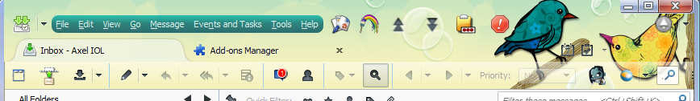 - Added green color "Parakeet"
- To do: improve css tidy up routine - disable only works once in a session.
-
0.9.3 - 17/06/2013
- Persisted statusbar icon across sessions.
- Added version history button.
- Reuse preferences window if it is already open.
- Improved debug log feature.
-
0.9.2 - 15/06/2013
- Real Instant Apply from Options screen
- Added options for border radius (value in em and left, right switches)
- Added Statusbar Icon
- Menu will now be made visible automatically when Addon is installed or updated.
- Add Phoenity style
-
0.9.1 - 10/06/2013
- Added options window, with settings for margins and color
- Added style chooser, supporting major themes
- Added Linux / Mac support
- Bumped up max version to 22 for current beta users
-
0.9 - Initial Release - 09/06/2013
- Initial Release, based on Rise of the Tools addon - this is my first restartless addon
- It just moved the menu to the top, no configurable options.